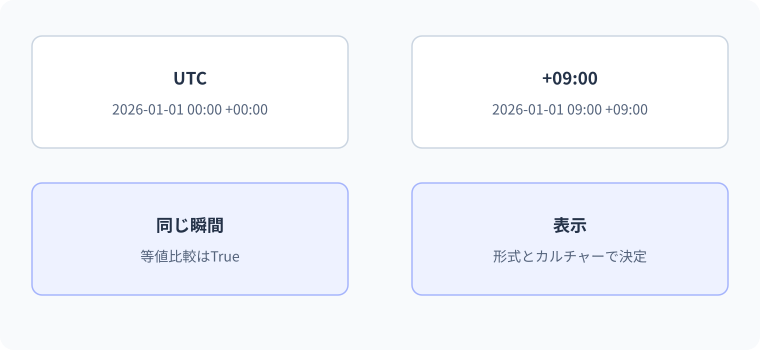

22 日時とカルチャー — 詳細解説
同じ瞬間の異なる表示。
図解：同じ瞬間の異なる表示

日付・時刻・瞬間の違い
誕生日、会議の開始時刻、注文が確定した瞬間、処理にかかった時間は、全て数字で時を表しますが意味は異なります。必要な意味を型で区別しないと、表示する地域が変わっただけで日付がずれたり、同じ瞬間を別のものとして比較したりします。
UTCは世界の時刻を扱う基準です。オフセットはUTCとの差を表します。タイムゾーンは地域ごとの時刻の規則であり、夏時間などによる過去・将来の差も含むため、単なる+09:00のような差とは同じではありません。カルチャーは数値や日時の表示・解析に使う地域的な書式などの設定です。
| 表したいもの | 主な候補 | 選ぶ理由 |
|---|---|---|
| 誕生日・締め日 | DateOnly | 時刻や地域換算を持たせない |
| 毎日の開店時刻 | TimeOnly | 特定の日付とは切り離す |
| 発生した瞬間とUTCとの差 | DateTimeOffset | 一つの瞬間を明確に扱いやすい |
| UTC / Localなどの区分を持つ日時 | DateTime | 既存APIなどとの連携。Kindに注意 |
| 所要時間・間隔 | TimeSpan | 日付ではなく長さ |
| 実際の経過時間の測定 | Stopwatch | 時計合わせの影響を避けやすい計測 |
DateOnlyは日付そのものを表す
using System.Globalization;
var deadline = new DateOnly(2026, 9, 30);
DateOnly next = deadline.AddDays(1);
Console.WriteLine(deadline.ToString("yyyy-MM-dd", CultureInfo.InvariantCulture));
Console.WriteLine(next.ToString("yyyy-MM-dd", CultureInfo.InvariantCulture));期待出力は2026-09-30、2026-10-01です。AddDaysは元の値を書き換えず、新しい日付を返します。DateOnlyは値型なので、変数deadlineとnextはそれぞれの値を保持します。月末から翌月へ移る計算を、日だけ手動で31に増やすのではなくAPIへ任せています。
yyyy-MM-ddでは年、月、日を指定し、MMは月です。mmは分なので、大文字と小文字の違いが意味を持ちます。InvariantCultureは利用者の地域設定に左右されない書式処理に使うカルチャーです。データ交換の安定した文字列表現に適しています。
DateTimeOffsetで同じ瞬間を比べる
using System.Globalization;
var japan = new DateTimeOffset(2026, 9, 14, 9, 0, 0, TimeSpan.FromHours(9));
DateTimeOffset utc = japan.ToUniversalTime();
Console.WriteLine(japan.ToString("yyyy-MM-dd HH:mm zzz", CultureInfo.InvariantCulture));
Console.WriteLine(utc.ToString("yyyy-MM-dd HH:mm zzz", CultureInfo.InvariantCulture));
Console.WriteLine(japan == utc);期待出力は2026-09-14 09:00 +09:00、2026-09-14 00:00 +00:00、Trueです。表示される時計の数字は違いますが、同じ瞬間を表しています。zzzはUTCとの差を表示します。DateTimeOffsetはオフセットを保持しますが、「どの地域の規則を使ったか」というタイムゾーンID自体を保持する型ではありません。
- 1日本の表示
2026-09-14 09:00 +09:00
- 2UTCへ変換
9時間の差を反映
- 3同じ瞬間
2026-09-14 00:00 +00:00
- 4別の表示先へ変換
表示対象の地域規則を適用
「全てUTCで保存すれば全種類の日付が解決する」とは限りません。誕生日のような日付だけの値や、将来の地域時刻で行う予約では、DateOnlyやタイムゾーンIDなど、意味に合う情報も必要です。
DateTime.Kindと変換の前提
DateTimeにはUtc、Local、UnspecifiedというKindがあります。UtcはUTC、Localはその環境のローカル時刻、Unspecifiedはどちらかを指定していない状態です。Kindは独立したタイムゾーンIDではありません。
var unspecified = new DateTime(2026, 9, 14, 9, 0, 0);
var utc = new DateTime(2026, 9, 14, 0, 0, 0, DateTimeKind.Utc);
Console.WriteLine(unspecified.Kind);
Console.WriteLine(utc.Kind);期待出力はUnspecified、Utcです。new DateTimeで数字を作っただけでは、それが日本時間なのかUTCなのかは決まりません。DateTime.SpecifyKindは区分のラベルを付け替える操作であり、指定した地域から別の地域へ時計の数字を換算する操作ではありません。元のデータが何を意味するか不明なら、適当にUtcを付けて正しい瞬間になったとみなさないでください。
間違い：地域依存の文字列を固定形式として読む
using System.Globalization;
string input = "14/09/2026";
DateTime date = DateTime.Parse(input, CultureInfo.GetCultureInfo("en-US"));
Console.WriteLine(date);この形式は指定した解析条件で有効な月・日として読めず、FormatExceptionになる可能性のある入力です。曖昧な日付を利用者環境へ任せず、入力仕様が決まっているなら形式を明示してTryParseExactを使います。
using System.Globalization;
string input = "2026-09-14";
bool ok = DateOnly.TryParseExact(input, "yyyy-MM-dd",
CultureInfo.InvariantCulture, DateTimeStyles.None, out DateOnly date);
if (ok)
{
Console.WriteLine(date.ToString("yyyy-MM-dd", CultureInfo.InvariantCulture));
}
else
{
Console.WriteLine("日付は年-月-日で入力してください");
}期待出力は2026-09-14です。DateTimeStyles.Noneは追加の特別な解析指定を使わないことを表す列挙値です。2026-02-30のような存在しない日付は、形が似ていても失敗します。文字列の形式と、カレンダーとして存在する値の両方が重要です。
実用例：締め日までの日数を明示的に計算する
var today = new DateOnly(2026, 9, 14);
var deadline = new DateOnly(2026, 9, 20);
int remaining = deadline.DayNumber - today.DayNumber;
Console.WriteLine($"残り{remaining}日");期待出力は残り6日です。DayNumberは基準日から数えた日数を表し、二つの日付の差を整数で求められます。この例ではテスト可能なようにtodayを固定しています。本当の今日を取得する場合、利用者のどの地域で今日を判断するかを決めます。
当日を残り1日に含める業務なら計算規則が変わります。型が正しくても、締め日の含め方という業務ルールは別に決めなければなりません。
間違い：AddDaysを呼ぶだけで変数が変わると思う
using System.Globalization;
var date = new DateOnly(2026, 9, 14);
date.AddDays(1);
Console.WriteLine(date.ToString("yyyy-MM-dd", CultureInfo.InvariantCulture));観察結果は2026-09-14のままです。戻り値を捨てています。修正はdate = date.AddDays(1);です。前の文字列のTrimと同じく、元の値を変える操作なのか新しい値を返す操作なのかを確認します。
using System.Globalization;
var date = new DateOnly(2026, 9, 14);
date = date.AddDays(1);
Console.WriteLine(date.ToString("yyyy-MM-dd", CultureInfo.InvariantCulture));修正後は2026-09-15です。DateTime、DateTimeOffsetなどの日付計算でも、戻り値の受け取りが必要です。
時計の時刻と経過時間を分ける
DateTime.Nowの差は、OSの時計の変更などの影響を受ける可能性があります。処理時間を測るならStopwatchを使います。Stopwatchは利用可能な高精度タイマーなどを利用する計測用の型です。
using System.Diagnostics;
var watch = Stopwatch.StartNew();
long total = 0;
for (int i = 0; i < 100_000; i++)
{
total += i;
}
watch.Stop();
Console.WriteLine(total);
Console.WriteLine($"計測ミリ秒:{watch.Elapsed.TotalMilliseconds}");合計の期待値は4999950000です。経過時間の具体的な値は環境・JIT・負荷によって変わるため、固定の正解値を置きません。この短い一回の測定だけで性能の優劣を判断するのも不適切です。実務の性能比較ではウォームアップや複数回の測定、入力条件を揃えることが必要になります。
3段階の練習
基礎：2026-12-31に1日足した日付を固定形式で表示してください。解答は2027-01-01です。日や月の数字を手作業で更新する別解ではなく、AddDaysの返り値を使います。
標準：+09:00の2026-09-14 18:30をUTCに変換してください。09:30 +00:00です。日付が変わる境界として00:30 +09:00も考え、UTCでは前日の15:30になることを確認します。
応用：締め日を入力し、不正な形式、過去、今日、未来を別々に表示する設計をしてください。TryParseExactに成功してからDateOnly同士を比較する順序が中心です。テストでは「今日」を引数で渡せるメソッドへ分けると、実際のカレンダーの日付に依存せず検証できます。
境界・比較例：表示形式を固定した数値
0.00は小数2桁、N2は桁区切り付き小数2桁です。InvariantCultureで実行環境の地域設定による表示の違いを避けています。
using System.Globalization;
decimal value = 1234.5m;
Console.WriteLine(value.ToString("0.00", CultureInfo.InvariantCulture));
Console.WriteLine(value.ToString("N2", CultureInfo.InvariantCulture));想定出力
1234.50
1,234.50公式資料
確認日：2026年9月14日。本文の理解を補うための資料です。学習対象は.NET 10 / C# 14です。パッチ番号は固定しません。